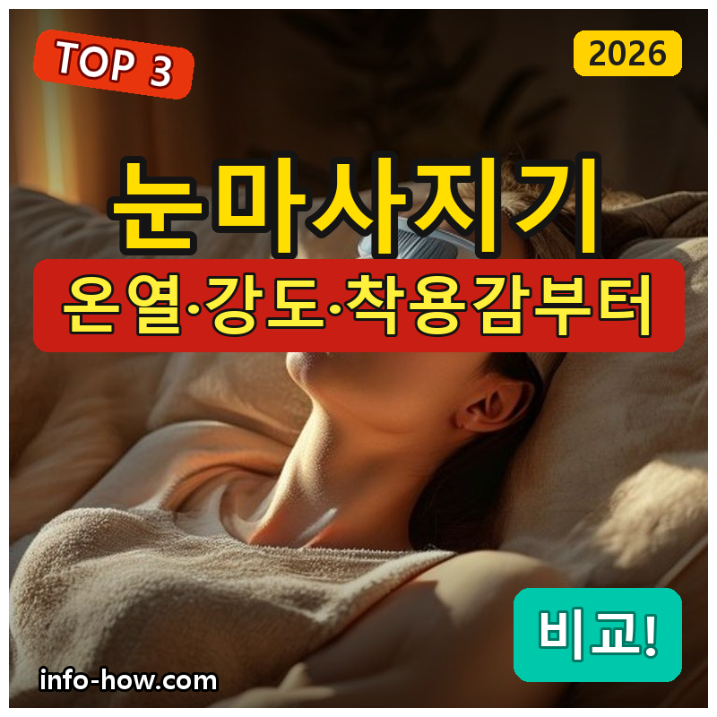
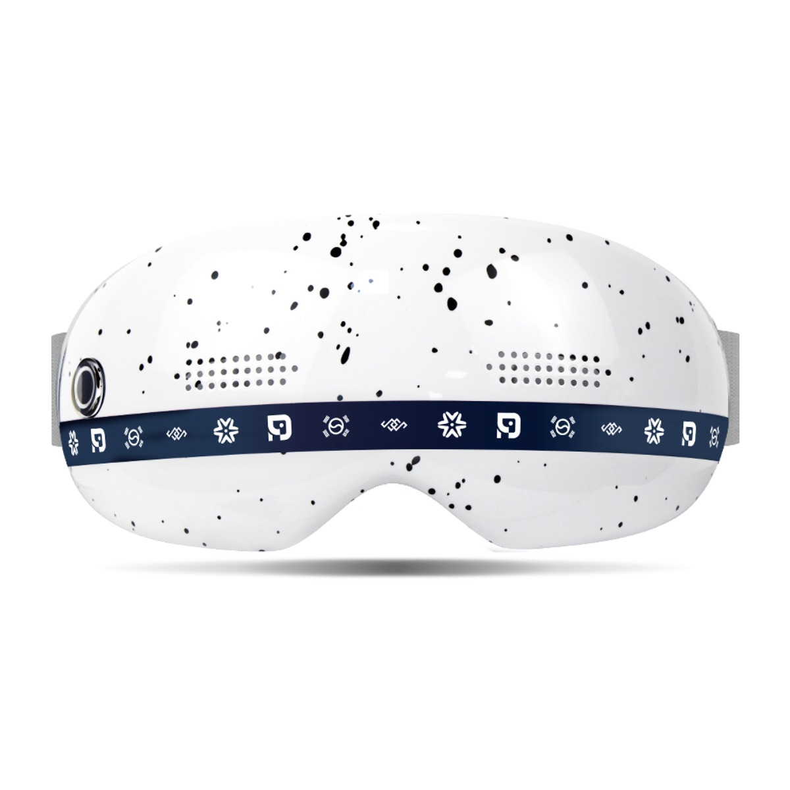
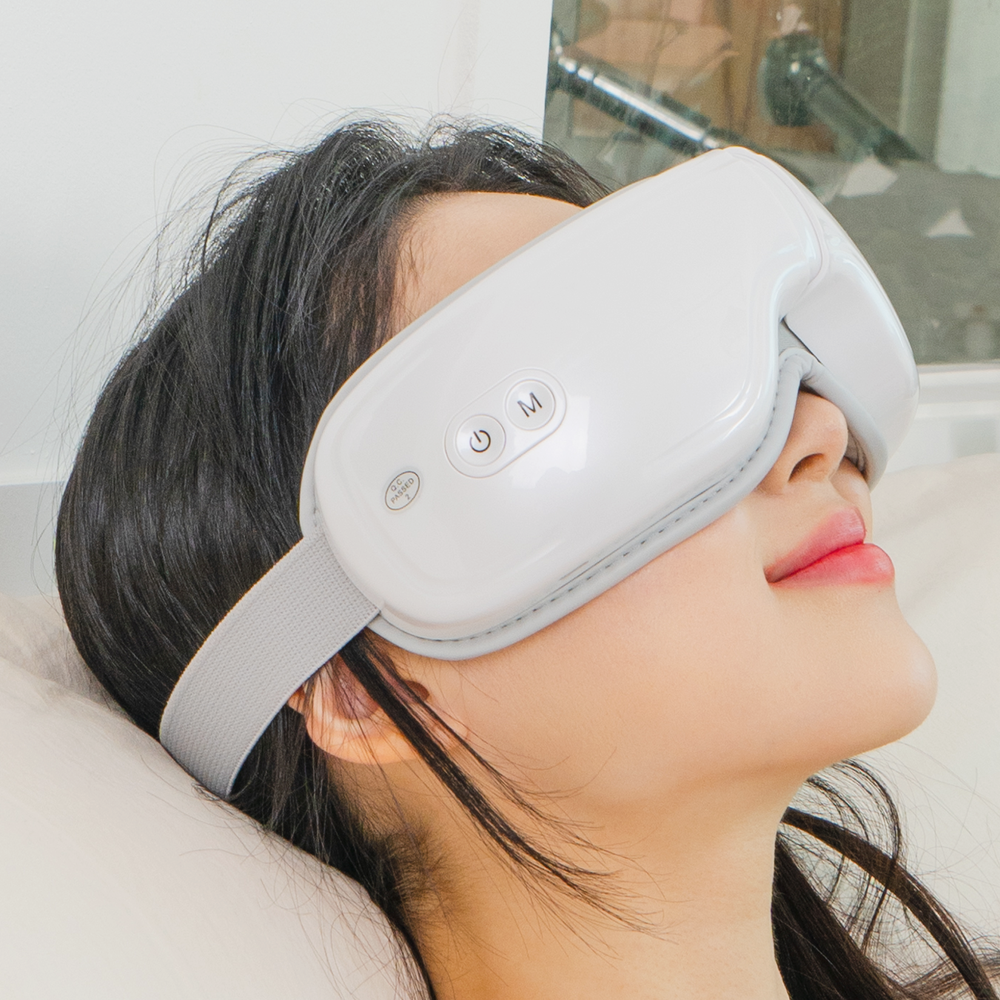
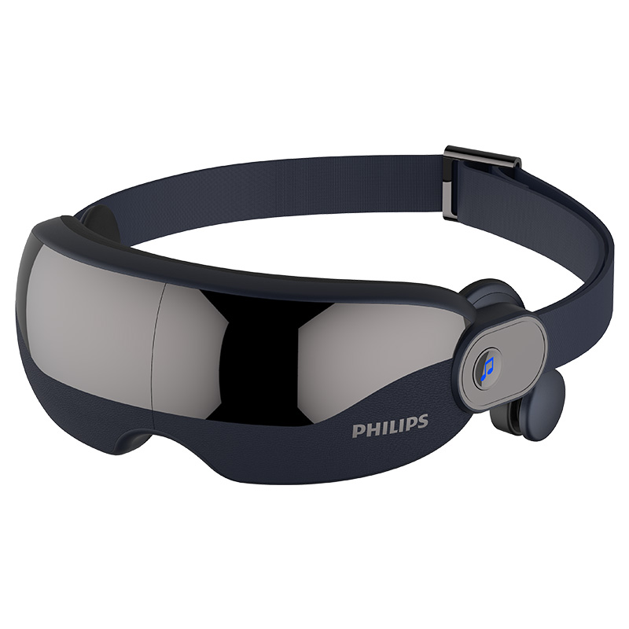

홈 › 제품리뷰 › 뷰티/헬스
눈마사지기, 온열 가성비냐 브랜드냐
작성: 생활서식 모음 · 2026-07-20

파트너스 활동의 일환으로 일정액의 수수료를 지급받습니다
🛒 오늘의 쿠팡 특가 보러가기 →
눈마사지기, 종일 화면 보고 나면 하나 갖고 싶죠?
핵심은 "온열과 강도, 착용감" 3대 를※ 눈마사지기는 눈 주변 피로 완화·휴식용 기기이며, 안과 질환 치료 목적이 아닙니다.
📋 목차
눈마사지기, 온열 가성비냐 브랜드냐 — 결론 먼저 스펙 비교표: 한눈에 보기 눈마사지기 고를 때 봐야 할 4가지 가성비냐 브랜드냐, 뭘 사야 할까? 자주 묻는 질문 (FAQ) 결론: 한 줄 요약
눈마사지기, 온열 가성비냐 브랜드냐 — 결론 먼저
눈마사지기는 "온열과 압박 강도, 착용감" 으로 갈려요.휴그랩 온열 처럼 온열·압박 밸런스가 좋은 제품이 무난합니다. 저렴하게 온열 위주면 가성비, 브랜드 신뢰·완성도를 원하면 필립스입니다.
1 입문·온열 (가성비 초이스)
가성비

3만원대 온열
1. 릴렉스파 무선 온열 눈마사지기
3만원대 무선 온열 눈 주변 온열+압박 접어서 보관·휴대
고급형은 아니어도
추천 대상
눈마사지기를 처음 저렴하게 써볼 분 화면을 오래 봐 눈 주변이 뻐근한 분 온열 위주로 편하게 쓰려는 분 장점
3만원대로 부담 없이 온열 눈마사지기를 마련 온열+압박으로 눈 주변 피로 완화 휴식에 도움 무선·접이식이라 보관·휴대가 편함 단점
압박·프로그램 다양성은 브랜드 제품보다 단순할 수 있음 입문·가성비엔 딱이지만, 밸런스 면 2번, 브랜드 완성도면 3번 필립스입니다. "온열 위주로 저렴하게"면 이 가성비가 부담 없어요.
한줄 리뷰
"눈이 뻐근한데 저렴하게"면 온열 가성비로 시작하기 좋습니다. 온열이 은근히 시원해요. 밸런스·브랜드를 원하면 2·3번을 보세요.
주요 스펙
제품: 릴렉스파 무선 온열 눈마사지기 방식: 무선 · 온열 · 압박 용도: 눈 주변 피로 완화 휴식 배송: 로켓배송 가격: 약 32,890원 (변동 가능) ※ 실제 스펙·가격과 차이가 있을 수 있습니다
2 밸런스 (베스트 초이스)
베스트

온열·압박 밸런스
2. 휴그랩 무선 온열 눈마사지기
온열·압박·착용감이 두루 무난한
추천 대상
온열과 압박을 두루 원하는 분 착용감·편의 밸런스를 원하는 분 무난한 제품을 원하는 분 장점
온열+압박이 밸런스 있게 조합돼 눈 주변 휴식에 무난 무선이라 소파·침대에서 편하게 사용 착용감이 무난해 두루 쓰기 좋음 단점
브랜드 완성도·A/S를 최우선으로 하면 3번이 나음 저렴하게 온열 위주면 1번, 브랜드 완성도면 3번 필립스입니다. 2번은 "온열+압박 밸런스" 의 실속 구간 — 두루 쓰기 무난합니다.
한줄 리뷰
"온열도 압박도 무난하게"면 이 밸런스형이 좋습니다. 착용감도 무난해요. 브랜드·완성도를 원하면 3번을 보세요.
주요 스펙
제품: 휴그랩 무선 온열 눈마사지기 방식: 무선 · 온열 · 압박 강점: 밸런스 · 착용감 배송: 로켓배송 가격: 약 69,000원 (변동 가능) ※ 실제 스펙·가격과 차이가 있을 수 있습니다
3 브랜드·완성도 (프리미엄)
프리미엄

필립스 뷰아이
3. 필립스 뷰아이 눈마사지기
필립스 브랜드 완성도 정교한 온열·압박 A/S·신뢰
검증된 브랜드의 정교한 마사지
추천 대상
브랜드 신뢰·A/S를 중시하는 분 정교한 온열·압박 프로그램을 원하는 분 완성도 있는 제품을 원하는 분 장점
필립스 브랜드라 완성도·마감·A/S가 안정적 온열·압박 프로그램이 정교해 사용감이 좋음 오래 믿고 쓰기 좋은 신뢰성 단점
저렴하게면 1번, 밸런스 실속이면 2번이 합리적입니다. 3번은 브랜드 신뢰·완성도 를 원하는 분에게 값어치가 있습니다.
한줄 리뷰
"이왕이면 브랜드로 제대로"면 필립스 뷰아이가 무난합니다. 온열·압박이 정교해요. 가성비·밸런스면 1·2번이 합리적입니다.
주요 스펙
제품: 필립스 뷰아이 눈마사지기 (PPM2702) 방식: 온열 · 압박 프로그램 강점: 브랜드 · 완성도 · A/S 배송: 로켓배송 가격: 약 139,000원 (변동 가능) ※ 실제 스펙·가격과 차이가 있을 수 있습니다
스펙 비교표: 한눈에 보기
가격·풍량·무게 중 본인에게 중요한 기준부터 보세요. "최고" 표시는 3제품 중 객관적 1위 값입니다.
← 좌우로 스크롤 →
눈마사지기 고를 때 봐야 할 4가지
온열·강도·착용감만 맞춰도 "밋밋하거나 부담스러운" 실패를 막습니다.
1) 온열 — 눈 주변 이완
온열이 있으면 눈 주변 이완·휴식에 도움 온도 조절·자동 꺼짐(안전)이 있으면 안심 너무 뜨겁지 않게 조절되는지 확인 2) 압박 강도 — 취향
압박이 약하면 밋밋, 너무 세면 부담 강도 조절 단계가 있으면 취향대로 눈에 직접 강한 압을 주지 않는 설계가 안전 3) 착용감·무선 — 편의
머리 둘레 조절이 되면 다양한 얼굴형에 맞음 무선이면 소파·침대에서 편하게 사용 무게가 무거우면 오래 착용이 부담 4) 안전 — 눈은 민감 부위
자동 꺼짐 타이머로 과사용 방지 눈 질환·수술 이력이 있으면 사용 전 전문가 상담 이상 감각이 있으면 즉시 사용 중단 가성비냐 브랜드냐, 뭘 사야 할까?
온열 취향과 예산만 정하면 답이 나옵니다.
온열·저렴하게: 1번 릴렉스파 → 3만원대밸런스: 2번 휴그랩 → 온열+압박브랜드·완성도: 3번 필립스 뷰아이 → 정교자주 묻는 질문 (FAQ)
Q1. 눈마사지기가 눈 건강이나 시력에 도움이 되나요? 눈마사지기는 눈 주변 피로 완화·휴식용 기기이며, 시력을 개선하거나 안과 질환을 치료하는 기기가 아닙니다. 온열과 가벼운 압박으로 눈 주변 근육의 긴장을 풀어 편안함을 주는 정도로 이해하는 것이 맞습니다. 시력 저하·안구건조·통증 등 증상이 있다면 마사지기에 의존하지 말고 안과 진료를 받으세요.
Q2. 온열이 눈에 부담되지는 않나요? 적정 온도로 설계된 제품은 대체로 무리가 없지만 주의가 필요합니다. 온도가 너무 높거나 오래 사용하면 눈 주변이 건조하거나 부담될 수 있으므로, 온도 조절과 자동 꺼짐(타이머) 기능이 있는 제품이 안전합니다. 렌즈를 뺀 상태로 사용하고, 사용 후 눈이 불편하면 온열을 낮추거나 사용 시간을 줄이세요.
Q3. 하루에 얼마나 쓰는 게 좋나요? 제품 권장 시간(보통 한 번에 10~15분 내외)을 지키는 것이 좋습니다. 눈은 민감한 부위라 오래 강하게 자극하기보다 짧게 휴식용으로 쓰는 것이 안전합니다. 자동 꺼짐 기능이 있으면 과사용을 막아줍니다. 사용 후 눈이 편안하고 개운한 정도가 적당하며, 불편함이 남으면 사용을 줄이세요.
Q4. 렌즈나 안경을 낀 채로 써도 되나요? 콘택트렌즈는 빼고 사용하는 것이 좋습니다. 눈마사지기의 온열·압박이 렌즈 착용 상태에서는 눈에 부담이 될 수 있습니다. 안경도 착용 형태상 벗고 쓰는 것이 밀착·착용감에 좋습니다. 눈 주변에 직접 닿는 기기이므로 위생을 위해 닿는 부분을 청결하게 관리하고, 눈 질환이 있으면 사용 전 전문가와 상담하세요.
Q5. 어떤 사람은 쓰면 안 되나요? 눈·눈 주변에 질환이 있거나 최근 눈 수술을 받은 분, 녹내장·망막 질환 등이 있는 분은 사용 전 반드시 안과 전문의와 상담해야 합니다. 온열·압박이 오히려 부담이 될 수 있기 때문입니다. 사용 중 통증·시야 이상·이물감 등이 느껴지면 즉시 사용을 멈추고 진료를 받으세요. 눈마사지기는 어디까지나 피로 완화 보조용입니다.
결론: 한 줄 요약
1) 릴렉스파 온열 — 약 32,890원 / 입문·온열. 3만원대 무선 온열 가성비.2) 휴그랩 온열 — 약 69,000원 / 밸런스. 온열+압박 두루 무난.3) 필립스 뷰아이 — 약 139,000원 / 브랜드. 정교한 온열·압박, 믿고 오래.이 포스팅은 쿠팡 파트너스 활동의 일환으로, 이에 따른 일정액의 수수료를 제공받습니다.